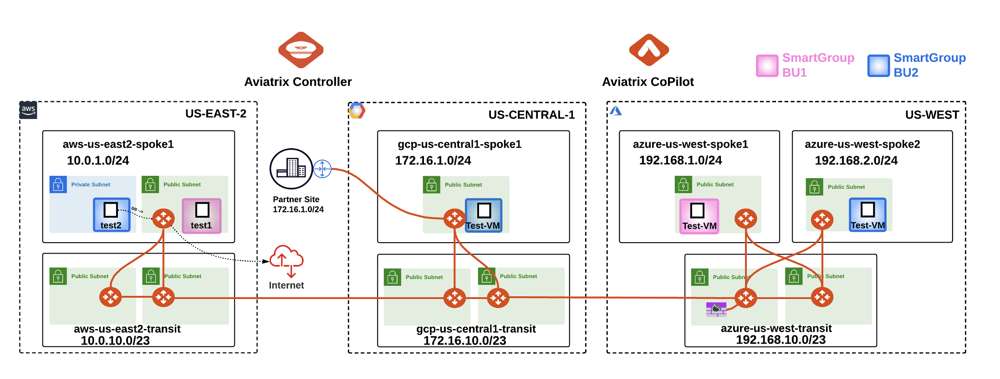
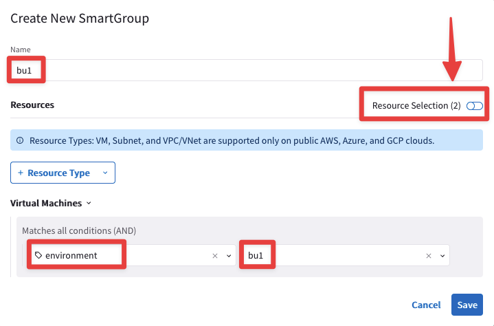
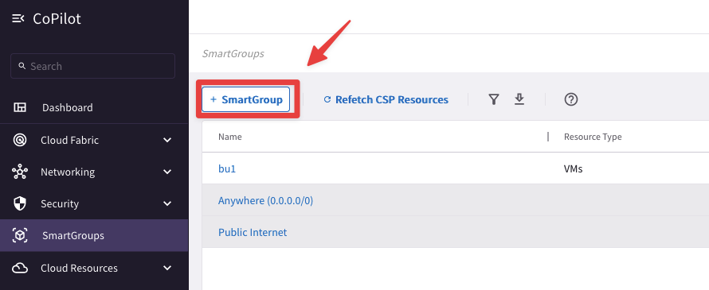
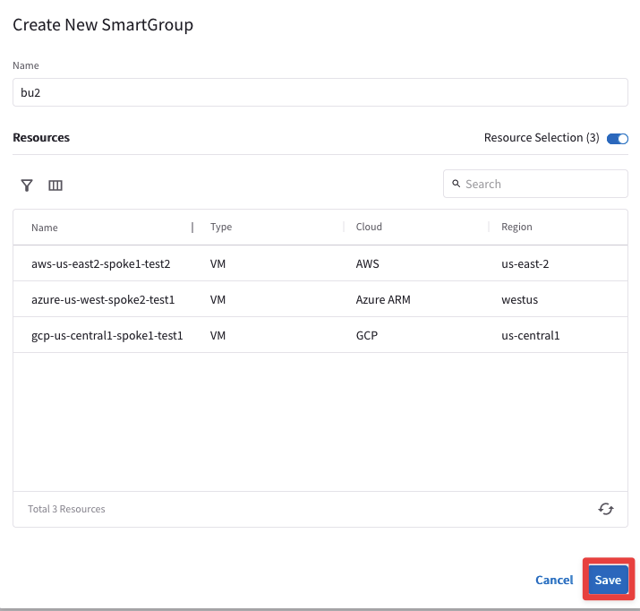
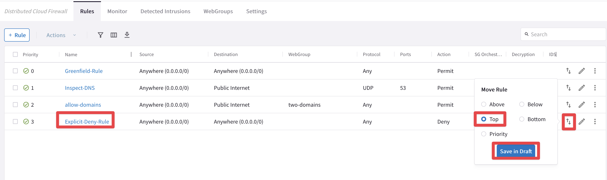
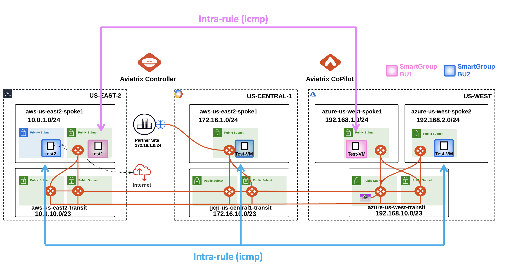
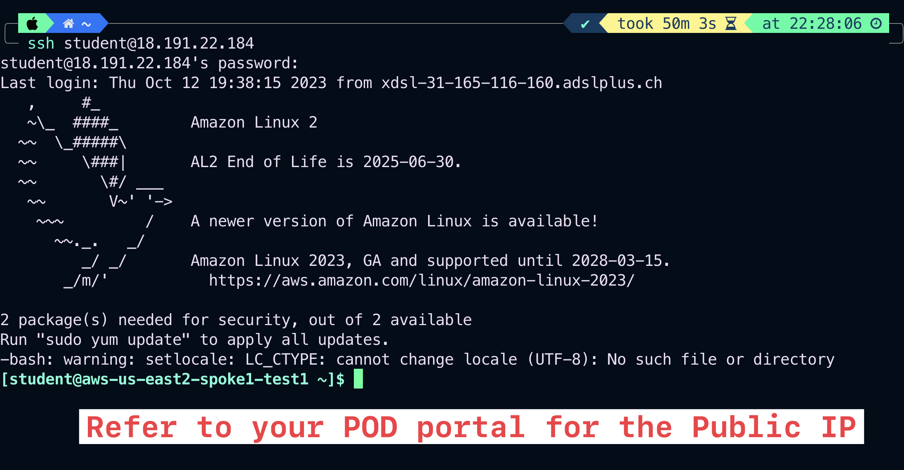
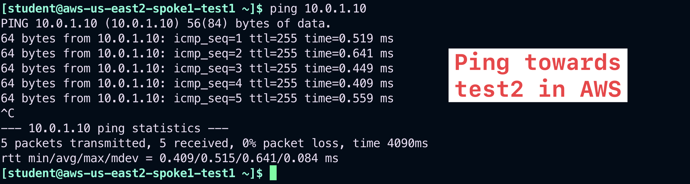
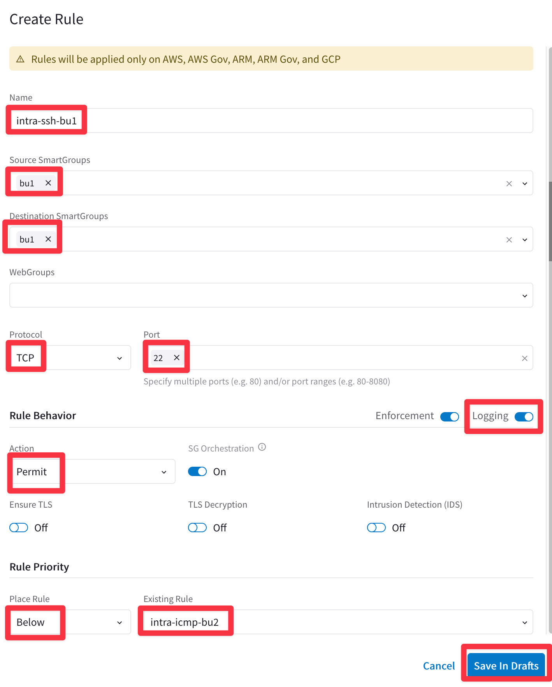
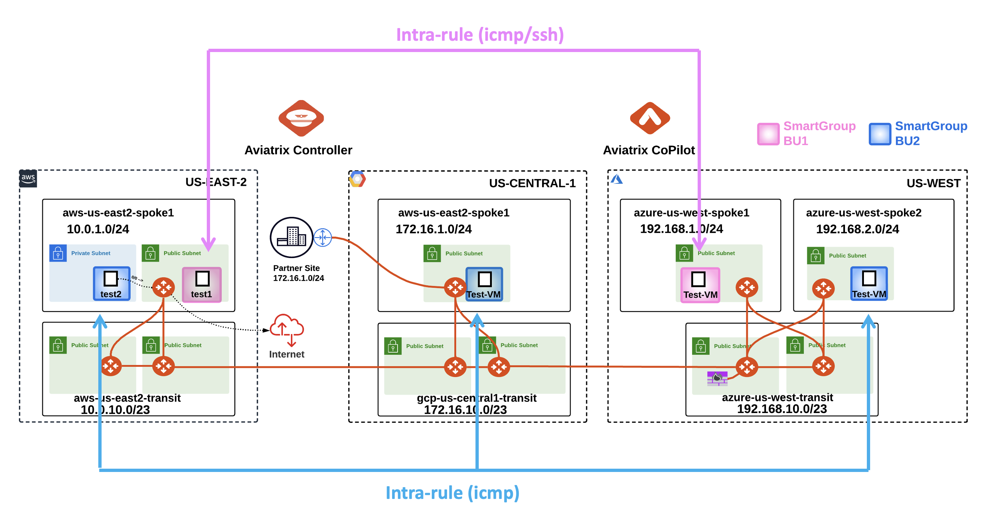

Lab 8 - DISTRIBUTED CLOUD FIREWALL#
1. Objective#
This lab will demonstrate how the Distributed Cloud Firewall work.
2. Distributed Cloud Firewall Overview#
The Distributed Cloud Firewall feature allows to create logical containers, called Smart Groups, that encompass instances that present similarities inside a VPC/VNet/VCN, and then they also allow to enforce rules (aka Distributed Cloud Firewalling Rules) within a Smart Group (i.e. the intra-rule) or among Smart Groups (i.e. the inter-rule).
Note
At this point in the lab, there is a unique routing domain (i.e. a Flat Routing Domain), due to the connection policy applied in Lab 3, between the Green domain and the Blue domain.
All the Test instances have been deployed with the typical CSP tags.
Important
The CSP tagging is the recommended method for defining the SmartGroups.
In this lab you are asked to achieve the following requirements among the instances deployed across the three CSPs:
Create a Smart Group with the name
"bu1"leveraging the tag"environment"Create a Smart Group with the name
"bu2"leveraging the tag"environment"Create an
intra-rulethat allows ICMP traffic within bu1Create an
intra-rulethat allows ICMP traffic within bu2Create an
inter-rulethat allows ICMP traffic only from bu1 towards bu2
 Figure 88: Edit the Explicit-Deny-Rule
3. Smart Group Creation#
Create two Smart Groups and classify each Smart Group, leveraging the CSP tag "environment":
Assign the name
"bu1"to the Smart Group #1.Assign the name
"bu2"to the Smart Group #2.
3.1. Smart Group “bu1”#
Go to CoPilot > SmartGroups and click on "+ SmartGroup".
 Figure 88: +SmartGroup
Figure 88: +SmartGroup
Ensure these parameters are entered in the pop-up window "Create New SmartGroup":
Name: bu1
CSP Tag Key: environment
CSP Tag Value: bu1
Before clicking on SAVE, discover what instances match the condition, turning on the knob "Resource Selection".
 Figure 88: +SmartGroup
The CoPilot shows that there are two instances that perfectly match the condition:
aws-us-east2-spoke1-test1 in AWS
azure-us-west-spoke1-test1 in Azure
 Figure 88: +SmartGroup
Figure 88: +SmartGroup
3.2. Smart Group “bu2”#
Create another Smart Group clicking on the "+ SmartGroup" button.
 Figure 88: +SmartGroup
Ensure these parameters are entered in the pop-up window "Create New SmartGroup":
Name: bu2
CSP Tag Key: environment
CSP Tag Value: bu2
Before clicking on SAVE, discover what instances match the condition, turning on the knob "Resource Selection".
 Figure 88: +SmartGroup
Figure 88: +SmartGroup
The CoPilot shows that there are three instances that match the condition:
aws-us-east2-spoke1-test2 in AWS
azure-us-west-spoke2-test1 in Azure
gcp-us-central1-spoke1-test1 in GCP
 Figure 88: +SmartGroup
At this point, you have only created logical containers that do not affect the existing routing domain.
Let’s verify that everything has been kept unchanged! Bear in mind that there is the Greenfield-Rule at the very top of your DCF rules list, whereby all kind of traffic will be permitted.
3.3. Connectivity verification (ICMP)#
Open a terminal window and SSH to the public IP of the instance aws-us-east2-spoke1-test1, and from there ping the private IP of each other instances to verify that the connectivity within AWS, and from AWS to GCP and Azure has not been modified.
Note
Refer to your POD for the private IPs.
 Figure 88: +SmartGroup
Figure 88: +SmartGroup
3.4. Connectivity verification (SSH)#
Verify also from the instance aws-us-east2-spoke1-test1 that you can SSH to the private instance in AWS, to the instance in GCP and likewise to the other two instances in Azure.
Note
Refer to your POD for the private IPs.
 Figure 88: +SmartGroup
Figure 88: +SmartGroup
 Figure 88: +SmartGroup
Figure 88: +SmartGroup
 Figure 88: +SmartGroup
Figure 88: +SmartGroup
 Figure 88: +SmartGroup
Figure 88: +SmartGroup
The previous outcomes confirm undoubtetly that the connectivity is working smoothly, despite the creation of those two new Smart Groups.
4. Rules Creation#
4.1. Establish a ZTN approach#
First and foremost, let’s move the Explicit-Deny-Rule at the very top of the list of your DCF rules.
Tip
Go to CoPilot > Security > Distributed Cloud Firewall > Rules (default), click on the the “two arrows” icon on the righ-hand side of the Explicit-Deny-Rule and choose "Move Rule" at the very Top. Then click on Save in Draft.
 Figure 88: Edit the Explicit-Deny-Rule
Then commit your change!
 Figure 88: Edit the Explicit-Deny-Rule
Figure 88: Edit the Explicit-Deny-Rule
4.2. Create an intra-rule that allows ICMP inside bu1#
Go to CoPilot > Security > Distributed Cloud Firewall > Rules (default tab) and create a new rule clicking on the "+ Rule" button.
 Figure 88: Edit the Explicit-Deny-Rule
Figure 88: Edit the Explicit-Deny-Rule
Insert the following parameters:
Name: intra-icmp-bu1
Source Smartgroups: bu1
Destination Smartgroups: bu1
Protocol: ICMP
Logging: On
Action: Permit
Do not forget to click on Save In Drafts.
 Figure 88: Edit the Explicit-Deny-Rule
Figure 88: Edit the Explicit-Deny-Rule
At this point, there would be one uncommitted rule at the very top, as depicted below.
 Figure 88: Edit the Explicit-Deny-Rule
Figure 88: Edit the Explicit-Deny-Rule
4.2. Create an intra-rule that allows ICMP inside bu2#
Create another rule clicking on the "+ Rule" button.
 Figure 88: Edit the Explicit-Deny-Rule
Figure 88: Edit the Explicit-Deny-Rule
Ensure these parameters are entered in the pop-up window "Create New Rule":
Name: intra-icmp-bu2
Source Smartgroups: bu2
Destination Smartgroups: bu2
Protocol: ICMP
Logging: On
Action: Permit
Place Rule: Below
Existing Rule: intra-icmp-bu1
Do not forget to click on Save In Drafts.
 Figure 88: Edit the Explicit-Deny-Rule
Figure 88: Edit the Explicit-Deny-Rule
At this point, you will have two new rules marked as New, therefore you can proceed and click on the Commit button.
 Figure 88: Edit the Explicit-Deny-Rule
Figure 88: Edit the Explicit-Deny-Rule
5. Verification#
Afte the creation of the previous Smart Groups and Rules, this is how the topology with the permitted protocols should look like:
 Figure 88: Edit the Explicit-Deny-Rule
5.1. Verify SSH traffic from your laptop to bu1#
SSH to the Public IP of the instance aws-us-east2-spoke1-test1.
 Figure 88: Edit the Explicit-Deny-Rule
5.2. Verify ICMP within bu1 and from bu1 towards bu2#
Ping the following instances from aws-us-east2-spoke1-test1:
gcp-us-central1-spoke1-test1 in GCP
azure-us-west-spoke1-test1 in Azure
azure-us-west-spoke2-test1 in Azure
According to the rules created before, only the ping towards the azure-us-west-spoke1-test1 will work, because this instance belongs to the same Smart Group bu1 as the instance from where you will be launching ICMP packets.
 Figure 88: Edit the Explicit-Deny-Rule
Figure 88: Edit the Explicit-Deny-Rule
Let’s investigate the logs:
Go to CoPilot > Security > Distributed Cloud Firewall > Monitor
 Figure 88: Edit the Explicit-Deny-Rule
Figure 88: Edit the Explicit-Deny-Rule
Now, let’s try to ping the instance aws-us-east2-spoke1-test2 from aws-us-east2-spoke1-test1.
Warning
The instance aws-us-east2-spoke1-test1 is in the same VPC. Although these two instances have been deployed in two distinct and separate VPCs, the communication will occur until you don’t enable the "intra-vpc separation".
 Figure 88: Edit the Explicit-Deny-Rule
Go to CoPilot > Security > Distributed Cloud Firewall > Settings and click on the "Manage" button inside the "Security Group (SG) Orchestration" field.
 Figure 88: Edit the Explicit-Deny-Rule
Figure 88: Edit the Explicit-Deny-Rule
Enable the SG orchestration on the aws-us-east2-spoke1 VPC, then put a tick on the checkbox "I understand the network impact" and click on Save.
 Figure 88: Edit the Explicit-Deny-Rule
Figure 88: Edit the Explicit-Deny-Rule
Relaunch the ping the instance towards aws-us-east2-spoke1-test2 from aws-us-east2-spoke1-test1.
 Figure 88: Edit the Explicit-Deny-Rule
Figure 88: Edit the Explicit-Deny-Rule
Important
This time the ping fails. You have achieved a complete separation between SmartGroups deployed in the same VPC in AWS US-EAST-2
5.3. Verify SSH within bu1#
SSH to the Private IP of the instance azure-us-west-spoke1-test1 in Azure. Despite the fact that the instance is within the same Smart Group “bu1”, the SSH will fail due to the absence of a rule that would permit SSH traffic within the Smart Group.
 Figure 88: Edit the Explicit-Deny-Rule
Figure 88: Edit the Explicit-Deny-Rule
5.4. Add a rule that allows SSH in bu1#
Create another rule clicking on the "+ Rule" button.
 Figure 88: Edit the Explicit-Deny-Rule
Figure 88: Edit the Explicit-Deny-Rule
Ensure these parameters are entered in the pop-up window "Create New Rule":
Name: intra-ssh-bu1
Source Smartgroups: bu1
Destination Smartgroups: bu1
Protocol: TCP
Port: 22
Logging: On
Action: Permit
Place Rule: Below
Existing Rule: intra-icmp-bu2
Do not forget to click on Save In Drafts.
 Figure 88: Edit the Explicit-Deny-Rule
Click on "Commit" to enforce the new rule in the Data Plane.
 Figure 88: Edit the Explicit-Deny-Rule
Figure 88: Edit the Explicit-Deny-Rule
Try once again to SSH to the Private IP of the instance azure-us-west-spoke1-test1 in Azure in BU1.
This time the connection will be established, thanks to the new intra-rule.
 Figure 88: Edit the Explicit-Deny-Rule
Figure 88: Edit the Explicit-Deny-Rule
Let’s investigate the logs once again.
Go to CoPilot > Security > Distributed Cloud Firewall > Monitor
 Figure 88: Edit the Explicit-Deny-Rule
Figure 88: Edit the Explicit-Deny-Rule
From the log above is quite evident that the "intra-ssh-bu1” rule is permitting SSH traffic within the SmartGroup bu1, successfully.
After the creation of the previous intra-rule, this is how the topology with the permitted protocols should look like:
 Figure 88: Edit the Explicit-Deny-Rule
5.4. SSH to VM in bu2
SSH to the Public IP of the instance gcp-us-central1-spoke1-test1: